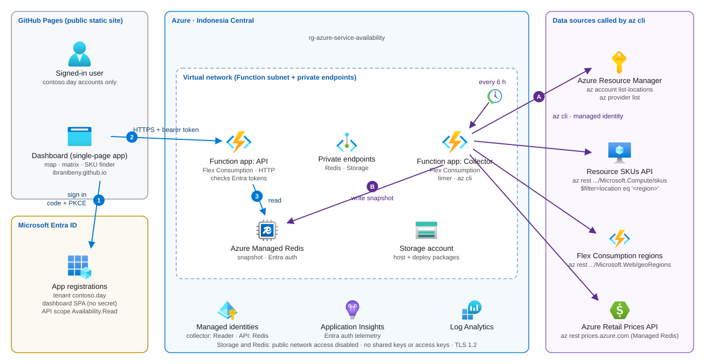

Contoso cloud team · internal
Where can I deploy it?
Pick an Azure region on the map and see which VM sizes, Azure Managed Redis SKUs and 28 more services it offers — refreshed on a schedule by Azure Functions running the Azure CLI.
Microsoft Entra ID sign-in. Only contoso.day accounts can read the data; guests and other tenants are refused by the API.
Scroll or pinch to zoom, drag to pan, select a dot to open the region. Region names appear when you zoom in.
Source: az provider list — resource type locations and zone mappings. Being listed doesn't guarantee capacity, quota or every SKU in that region.
Choose a tier and SKU
Region availability: az provider list (Microsoft.Cache/redisEnterprise). SKUs and prices: Azure Retail Prices API through az rest. Outlined SKUs are in preview according to Microsoft Learn.
How it works

1 · Scheduled collection
An Azure Functions timer trigger (Flex Consumption, Indonesia Central) runs every 6 hours. It signs in with its own managed identity (az login --identity, Reader on the subscription) and runs the Azure CLI:
az account list-locations— regions, coordinates, availability zonesaz provider list— where each service's resource type is offered, with zone mappingsaz restonMicrosoft.Compute/skusper region — VM sizes, zones and subscription restrictions (the API behindaz vm list-skus, filtered on the server)az restonMicrosoft.Web/geoRegions— Functions Flex Consumption regionsaz reston the Azure Retail Prices API — Azure Managed Redis SKUs priced in each region
2 · Cache
The snapshot is written to Azure Managed Redis in one transaction, compressed, with a run history and a change log. Redis has public network access disabled, access keys disabled, and is reached through a private endpoint with Microsoft Entra tokens issued to each Function app's managed identity.
3 · Protected API
The dashboard signs you in with Microsoft Entra ID (authorization code + PKCE, no secret in the page) and calls the API Function app with a bearer token. The API checks the signature, tenant, audience, the Availability.Read scope, the calling app, and that the account is a contoso.day member — otherwise it returns 401/403.
Read the data with care
- "Available" means the resource type or VM size is offered in the region for the collector's subscription. It doesn't guarantee capacity or quota at deployment time.
- "Restricted" VM sizes carry a
NotAvailableForSubscriptionrestriction for this subscription; other subscriptions can differ. - Azure Managed Redis SKUs are those with a pay-as-you-go "Cache Instance" meter in the region; prices are list prices in USD per hour.